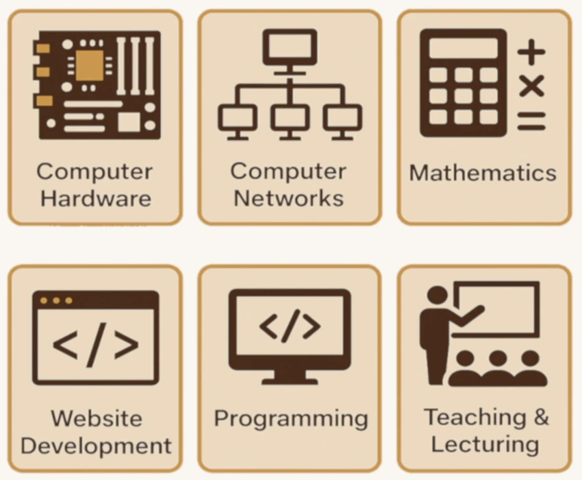

Professional Bio
Fascinated by computers since engaging with my Commodore VIC-20 at age 11, I’ve developed strong skills in programming, web development, hardware, CAD, networking, mathematics, and education. With over two decades of teaching and training experience, tech has always been my lifelong mission. I thrive on transforming complex concepts into accessible, engaging learning experiences.
Skills

Lifelong Learner
Motivated by a strong commitment to lifelong learning, I’m currently completing a Level 5 Diploma in Website Development and pursuing CompTIA training to deepen my IT expertise. I continuously build on decades of teaching, tech, and academic experience. This evolving journey fuels my ability to adapt, innovate, and support others in the ever-changing digital landscape.